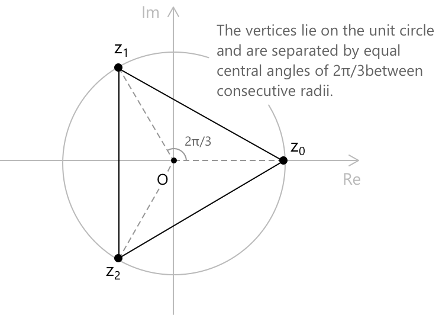

Корені з одиниці
Означення
Нехай задано натуральне число \(n\), тоді коренем одиниці порядку \(n\) називається комплексне число \(z\), що задовольняє рівняння \[ z^n = 1 \]
На комплексній площині існує рівно \(n\) таких чисел, і їх можна описати цілком явно за допомогою формули Ейлера, яка стверджує, що: \[ e^{i\theta} = \cos\theta + i\,\sin\theta \] для будь-якого дійсного \(\theta\). Існування рівно \(n\) розв'язань випливає з основної теореми алгебри: поліном \(z^n – 1\) має ступінь \(n\) і, отже, має не більше \(n\) коренів у \(\mathbb{C}\), і можна безпосередньо перевірити, що всі \(n\) сконструйованих нижче кандидатів є відмінними.
Щоб вивести явну форму коренів, розглянемо комплексне число одиничного модуля як \(z = e^{i\theta}\) і накладемо умову \(e^{in\theta} = 1\). Оскільки комплексна експонента є періодичною з періодом \(2\pi\), це вимагає, щоб \(n\theta = 2\pi k\) для деякого цілого \(k\), звідси \(\theta = 2\pi k/n\). Коли \(k\) набуває будь-яких \(n\) послідовних цілих чисел, отримані значення \(\theta\) дають \(n\) відмінних точок на одиничному колі. Зазвичай беруть \(k = 0, 1, \ldots, n-1\), що дає \(n\)-ті корені одиниці у вигляді:
\[z_k = e^{2\pi i k/n}\] \[k = 0, 1, \ldots, n-1\]
Розкладаючи за формулою Ейлера, кожен корінь можна записати в прямокутних координатах як:
\[ z_k = \cos\!\left(\frac{2\pi k}{n}\right) + i\,\sin\!\left(\frac{2\pi k}{n}\right) \]
Для \(k = 0\) отримують \(z_0 = 1\), що завжди є коренем незалежно від \(n\). При \(n = 2\) двома коренями є \(1\) та \(-1\). При \(n = 4\) чотирма коренями є \(1, i, -1, -i\), які відомі з арифметики цілих гауссових чисел. Для загального \(n\) корені виступають спряженими парами: оскільки аргументи \(2\pi k/n\) та \(2\pi(n-k)/n\) в сумі дають \(2\pi\), маємо \(z_{n-k} = \overline{z_k}\).
Групова структура
Множина \(\mu_n\) всіх \(n\)-тих коренів одиниці, оснащена операцією комплексного множення, утворює групу. Замкненість виконується, оскільки \(z_j \cdot z_k = e^{2\pi i(j+k)/n}\), що знову є \(n\)-тим коренем одиниці, оскільки:
\[(z_j z_k)^n = z_j^n z_k^n = 1\]
Нейтральним елементом є \(z_0 = 1\), а оберненим до \(z_k\) є \(z_{n-k}\), що збігається з комплексним спряженим \(\overline{z_k}\), оскільки \(|z_k| = 1\). Точніше, маємо:
\[ z_j \cdot z_k = z_{(j+k) \bmod n} \]
Це показує, що \(\mu_n\) є циклічною групою порядку \(n\), що породжується одним елементом \(z_1 = e^{2\pi i/n}.\) Кожен інший корінь є степенем \(z_1\), оскільки \(z_k = z_1^k\). Ця група ізоморфна \(\mathbb{Z}/n\mathbb{Z}\) за додаванням за модулем \(n\), причому ізоморфізм задано явно як \(z_k \mapsto k\).
Зокрема, \(\mu_n\) є абелевою, і структура її підгруп відображає структуру \(\mathbb{Z}/n\mathbb{Z}\): для кожного дільника \(d\) числа \(n\) існує єдина підгрупа порядку \(d\), а саме \(\mu_d\), яка природно вкладена в \(\mu_n\).
Ізоморфізм з \(\mathbb{Z}/n\mathbb{Z}\) задано явно як \(z_k \mapsto k\), і він зберігає групову операцію в тому сенсі, що множення коренів відповідає додаванню індексів за модулем \(n\). Оскільки \(\mathbb{Z}/n\mathbb{Z}\) є абелевою, то і \(\mu_n\) також є абелевою: порядок, у якому множаться два корені, не має значення, оскільки \(z_j z_k = z_k z_j\) випливає безпосередньо з комутативності додавання показників степенів.
Геометрична інтерпретація
На комплексній площині \(n\)-ті корені одиниці розташовані у вершинах правильного \(n\)-кутника, вписаного в одиничне коло, з однією вершиною у точці \(1\) на дійсній осі. Вершини рівномірно розподілені, з кутовою відстанню \(2\pi/n\) радіан між будь-якими двома послідовними коренями.
Ця геометрична регулярність є прямим наслідком рівномірного розподілу аргументів \(2\pi k/n\). Коли \(k\) збільшується на одиницю, відповідна точка на одиничному колі зміщується на фіксований кут. Випадки \(n = 3, 4, 6\) є особливо природними, оскільки відповідні правильні багатокутники заповнюють площину. Для \(n = 3\), наприклад, отримують рівносторонній трикутник з вершинами в точках:
\begin{align} z_0 &= 1 \\[6pt] z_1 &= e^{2\pi i/3} = -\frac{1}{2} + \frac{\sqrt{3}}{2}\,i \\[6pt] z_2 &= e^{4\pi i/3} = -\frac{1}{2} – \frac{\sqrt{3}}{2}\,i \end{align}

Для \(n = 6\) шість коренів є вершинами правильного шестикутника, і вони містять як підмножину корені для \(n = 2\) та \(n = 3\), що відображає дільність \(2 \mid 6\) та \(3 \mid 6\) і відповідні включення підгруп \(\mu_2, \mu_3 \subset \mu_6\).
Примітивні корені
Корінь одниці \(z_k \in \mu_n\) називається примітивним, якщо його порядок у групі дорівнює точно \(n\), тобто \(z_k^m \neq 1\) для кожного цілого додатного \(m < n\). Еквівалентно, \(z_k\) є генератором \(\mu_n\): кожен елемент групи можна представити як степінь \(z_k\). Оскільки \(z_k = z_1^k\), порядок \(z_k\) у циклічній групі \(\mu_n\) дорівнює \(n / \gcd(k, n)\). Отже, \(z_k\) є примітивним тоді і тільки тоді, коли \(\gcd(k, n) = 1\).
Кількість примітивних \(n\)-их коренів одниці, відповідно, дорівнює кількості цілих чисел у \({1, 2, \ldots, n}\), які взаємно прості з \(n\), що за означенням є функцією Ейлера \(\varphi(n)\).
Наприклад, при \(n = 6\) маємо \(\varphi(6) = 2\), і примітивними коренями є \(z_1 = e^{\pi i/3}\) та \(z_5 = e^{5\pi i/3}\), що відповідають \(k = 1\) та \(k = 5\). Коли \(n\) є простим числом, кожен корінь, окрім \(z_0 = 1\), є примітивним, оскільки \(\gcd(k, n) = 1\) для всіх \(k \in {1, \ldots, n-1}\), і відповідно \(\varphi(n) = n - 1\). Якщо \(\zeta\) — будь-який примітивний \(n\)-ий корінь одниці, то повну множину \(\mu_n\) можна відновити як:
\[{1, \zeta, \zeta^2, \ldots, \zeta^{n-1}}\]
Це робить вибір примітивного кореня питанням угомовності, а не математичної суті, оскільки всі примітивні корені генерують одну й ту саму групу.
Сума коренів
Сума всіх \(n\)-их коренів одниці дорівнює нулю для кожного \(n \geq 2\). Щоб переконатися в цьому, зауважимо, що поліном \(z^n – 1\) повністю розкладається над \(\mathbb{C}\) як:
\[ z^n - 1 = (z - z_0)(z - z_1)\cdots(z – z_{n-1}) \]
Розкривши праву частину та порівнявши коефіцієнт при \(z^{n-1}\) в обох частинах, отримаємо, що цей коефіцієнт дорівнює нулю зліва і \( -(z_0 + z_1 + \cdots + z_{n-1}) \) справа. Звідси випливає, що:
\[ \sum_{k=0}^{n-1} z_k = 0 \]
Альтернативна перевірка використовує формулу для геометричного ряду: оскільки \(z_1 \neq 1\) при \(n \geq 2\), маємо:
\[ \sum_{k=0}^{n-1} z_1^k = \frac{z_1^n – 1}{z_1 – 1} = \frac{1 - 1}{z_1 - 1} = 0 \]
Геометрично цей результат означає, що центроїд вершин правильного \(n\)-кутника, вписаного в одиничне коло, збігається з початком координат, що є геометрично очевидним через симетрію.
Добуток коренів
Добуток усіх \(n\)-их коренів одниці задається наступною тотожністю. Оскільки стала частина \(z^n - 1\) дорівнює \(-1\), а старший коефіцієнт дорівнює \(1\), порівняння коефіцієнтів у розкладі:
\[ z^n - 1 = (z - z_0)(z - z_1)\cdots(z – z_{n-1}) \]
дає:
\[ \prod_{k=0}^{n-1} z_k = (-1)^{n+1} \]
Цей результат є прямим наслідком формул Вієта, які пов'язують коефіцієнти полінома з елементарними симетричними поліномами його коренів. Наприклад, при \(n = 2\) коренями є \(1\) та \(-1\), їхній добуток дорівнює \(-1 = (-1)^3\), а при \(n = 3\) коренями є три кубічні корені одниці, їхній добуток дорівнює \(1 = (-1)^4\).
Циклотомічні поліноми
Примітивні \(n\)-і корені одниці — це саме корені \(n\)-го циклотомічного полінома \(\Phi_n(x)\), визначеного як монічний поліном, коренями якого є саме примітивні \(n\)-і корені одниці. Маємо:
\[ \Phi_n(x) = \prod_{\substack{k=1 \ \gcd(k,,n)=1}}^{n} \left(x – e^{2\pi i k/n}\right) \]
Степ \(\Phi_n(x)\) дорівнює \(\varphi(n)\). Перші кілька прикладів наступні: \(\Phi_1(x) = x - 1\), \(\Phi_2(x) = x + 1\), \(\Phi_3(x) = x^2 + x + 1\) та \(\Phi_4(x) = x^2 + 1\). Важлива тотожність пов'язує циклотомічні поліноми з розкладанням \(z^n – 1\): оскільки кожен \(n\)-ий корінь одниці є примітивним \(d\)-им коренем для одного-єдиного дільника \(d\) числа \(n\), маємо:
\[ z^n – 1 = \prod_{d \mid n} \Phi_d(z) \]
Ця тотожність дозволяє обчислювати циклотомічні поліноми рекурсивно. Фундаментальна теорема алгебраїчної теорії чисел стверджує, що \(\Phi_n(x)\) є незвідним над \(\mathbb{Q}\) для кожного цілого додатного \(n\): це детально розглянуто в окремому розділі про циклотомічні поліноми.